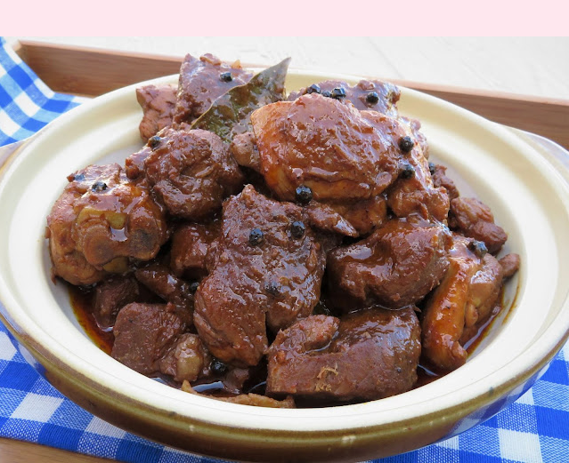

Adobo Recipe

How to Cook Yummy Adobo
Adobo is a common comfort food which brings back a lot of memories everytime I eat it. Here's a step-by-step guide on how I cook my adobo, chicken or pork.
Ingredients
- pork, chicken or beef
- garlic
- bay leaf
- whole peppercorns
- soy sauce
- vinegar
- msg
- sugar
- cooking oil
- water
Instructions
- Saute your garlic until it turns golden brown
- Toss in the meat of your choice and let it simmer
- Add peppercorn, soy sauce and vinegar. Do not stir until it boils for around 5 minutes to cook the vinegar
- Add water and let it simmer until tender
- Add in bay leaves and sugar to taste. Let boil for another 5 minutes
- Serve with rice and your favorite soda. Enjoy!
This mis how I cook my adobo and have always lighten up my mood. Feel free to try it and let me know how it goes.